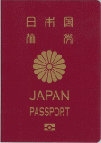

パスポートとビザの準備
中国へ旅行と決まったら、まずはパスポートを作りましょう。パスポートは日本語で「旅券」といいます。パスポートは外国であなたの身分を証明する唯一の証明書です。
海外では運転免許証や健康保険証より重要度が高いものだと思ってください。
パスポートは自分で最寄の県民センターや、パスポートセンターへ行って申請しなければいけません。下のホームページから最寄の申請機関を確認できます。
外務省 パスポート担当窓口一覧
さて、パスポートとビザの違いですが、パスポートは日本国民として身分を証明するもです。ビザは（査証）といって、その国の政府が発行する「入国許可証」のようなものです。
本来、海外へ行くためにはパスポート（旅券）とビザ（査証）の2つが必要です。
しかし、訪れる国によっては短期滞在の場合、ビザが免除されている国も多く、パスポートだけで入国できる国もあります。
中国もその1つで、
15日以内の滞在であればビザは必要ありません。
逆に中国人が日本へ来る場合は、各種ビザが必要になります。
長期滞在ならビザを取得しよう
中国滞在ビザは様々な種類があります。観光向けの「Lビザ」、短期留学や商用向けの「Fビザ」、長期留学向けの「Xビザ」、長期就業ができる「Zビザ」などがあります。細かいのを含めると更に多いのですが、ここでは観光向けのLビザの取得についてご案内いたします。
一般的なツアーによる中国旅行では、長くても6泊7日程度のものであり、基本的にはビザが不要で、パスポートだけで入国できます。
15日以上の滞在や旅行を予定している人は、観光向けビザ「Lビザ」の申請が必要になります。
Lビザにも30日、90日、180日と期間が違うものがあり、90日や180日は親族訪問や留学目的など、現地の団体や個人からの招聘状がないと発行してもらえません、
30日の観光ビザは比較的簡単に取得できます。パスポートの他、証明写真、ビザ申請書、航空券や現地ホテルの予約証明などが必要になります。
自分で中国大使館へ持って行って申請する方法もありますが、代行機関や旅行代理店でやってもらうのが便利です。
現地でパスポートを紛失したら？
あまり想像したくないですが、もしバッグや荷物の盗難に遭い、パスポートも盗られてしまったり紛失してしまった場合はどうすればいいのでしょう。
どれだけごめんなさいをしても、パスポートなしで日本に帰ることができません、中国の日本大使館及び日本領事館で再発行してもらうことになります。
ツアー旅行の場合は、他の人や添乗員さんにも迷惑をかけることになりますし、せっかくの旅行が台無しになってしまいますが、万一のことを考えて紛失した時のながれについて簡単にご紹介します。
①パスポートを紛失、又は盗難に遭う
②最寄りの公安（警察署）へ行き、経緯を報告して事案発生証明を書いてもらう。
③次に出入境管理局に行って、事案発生照明とパスポートのコピーなどを提出して、パスポートの紛失証明をもらいます。ここでパスポートのコピーがないと地獄です、その他の身分証や宿泊票の提出を求められることもあります。
④パスポートの紛失証明を持って、今度は日本領事館か日本大使館へ行って、パスポートの失効手続きを行う。
⑤すぐ帰りたいなら「帰国のための渡航書」を申請すれば、即日発行してもらい、そのままそれをパスポート替わりとして帰国することができます。（1回きり）
長期滞在予定の場合は、パスポートの再発行も可能（4日程度かかる）。
④.⑤は日本語が通じますが、②.③の手続きは通訳がいないと中国語でのやり取りになるので非常に厳しいです。
大手旅行会社等ですと、そういったトラブルシューティングも確立されているため、比較的楽に事が進むこともありますが、個人旅行となると大変です。パスポートは肌身離さず持っておきましょう。
中国旅行注意に戻す